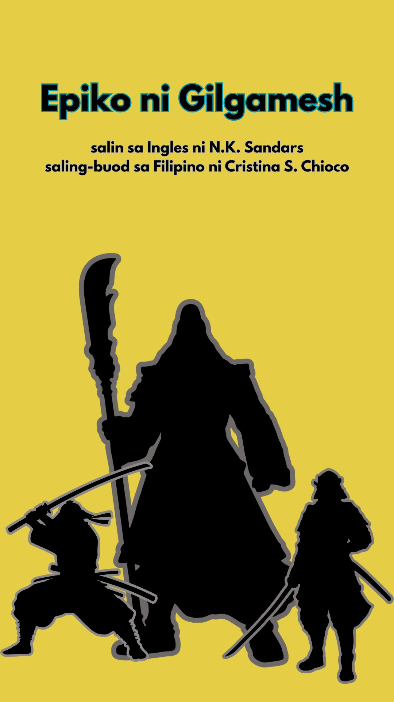
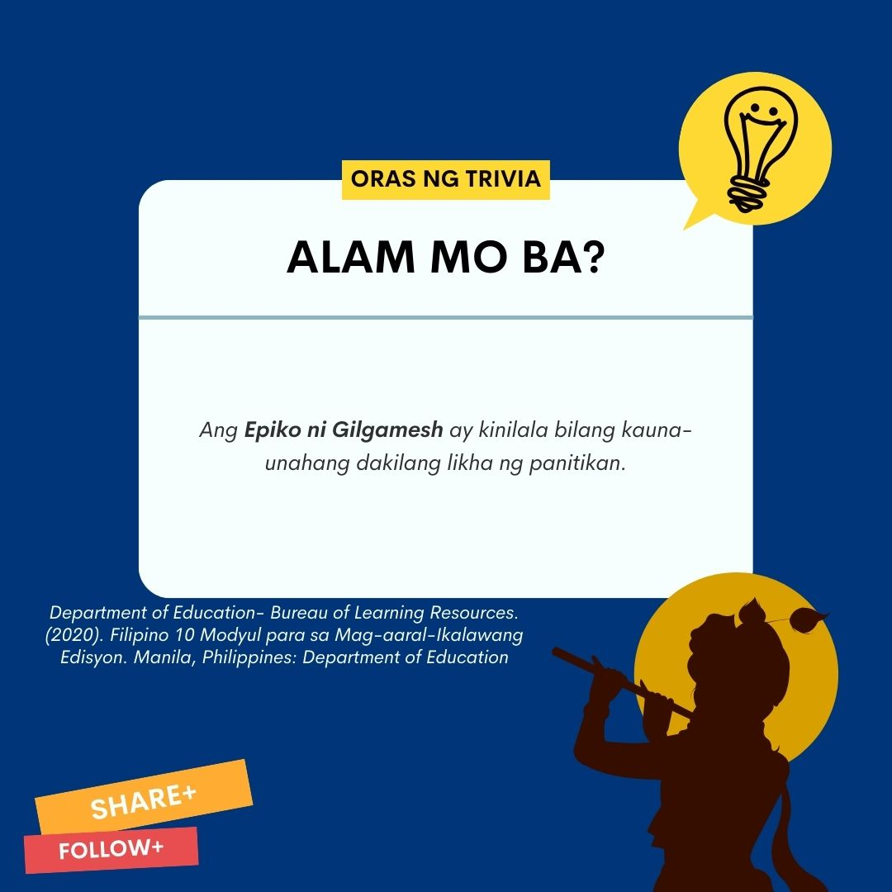
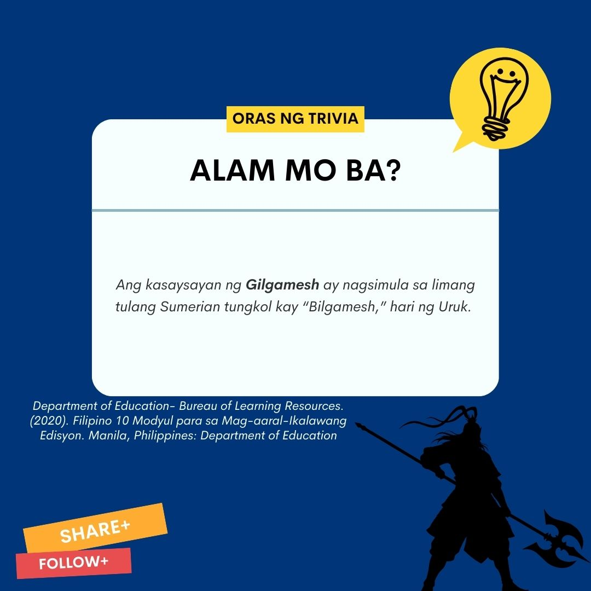
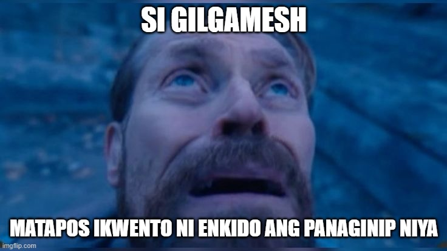
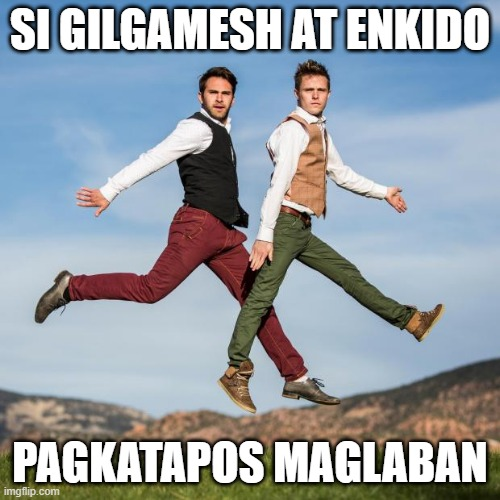
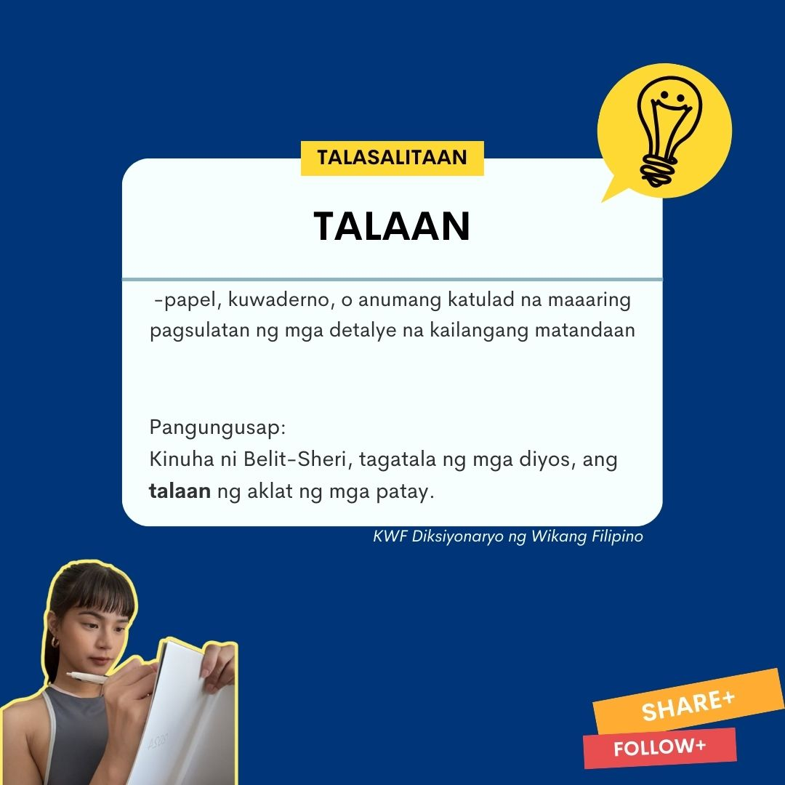
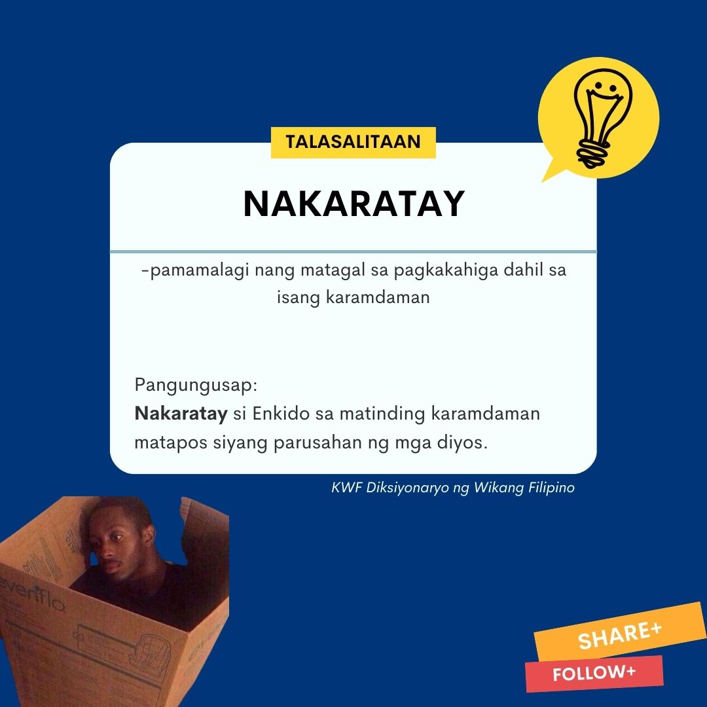
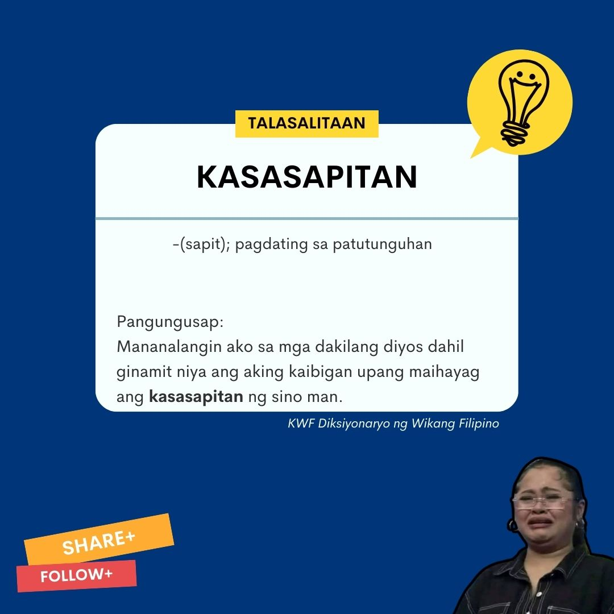

Pinagmulan:Mesopotamia
Sanggunian - 2020: Buod "Department of Education- Bureau of Learning Resources. Filipino 10 Modyul para sa Mag-aaral-Ikalawang Edisyon. Manila, Philippines: Department of Education
Mula sa Epiko ni Gilgamesh
salin sa Ingles ni N.K. Sandars
saling-buod sa Filipino ni Cristina S. Chioco
1. Nagsimula ang epiko sa pagpapakilala kay Gligamesh, ang hari ng lungsod ng Uruk, na ang dalawang katlo ng pagkatao ay diyos at ang sangkatlo ay tao. Matipuno, matapang, at makapangyarihan. Ngunit mayabang siya at abusado sa kaniyang kapangyarihan. Dahil sa kaniyang pang-aabuso, patuloy na nananalangin ang kaniyang mga nasasakupan na nawa’y makalaya sila sa kaniya.
2. Tinugon ng diyos ang kanilang dasal. Nagpadala ito ng isang taong kasinlakas ni Gilgamesh, si Enkido, na lumaking kasama ng mga hayop sa kagubatan. Nagpang-amok ang dalawa nang sila ay magkita. Nanalo si Gilgamesh. Ngunit sa bandang huli ay naging matalik na magkaibigan sila. Di naglaon ay naging kasa-kasama n ani Gilgamesh si Enkido sa kaniyang pakikipaglaban. Una, pinatay nila si Humbaba, ang demonyong nagbabantay sa kagubatan ng Cedar. Pinatag nila ang kagubatan. Nang tangkain nilang siraan ang diyosang si Ishtar, na nagpahayag ng pagnanasa kay Gilgamesh, ipinadala nito ang toro ng Kalangitan upang wasakin ang kalupaang pinatag nila bilang parusa. Nagapi nina Gilgamesh at Enkido ang toro. Hindi pinahintulutan ng mga diyos ang kanilang kawalan ng paggalang kaya itinakda nilang dapat mamatay ang isa sa kanila, at iyon ay si Enkido na namatay sa matinding karamdaman.
3. Habang nakaratay si Enkido dahil sa matinding karamdaman, sa sama ng loob ay nasabi niya sa kaniyang kaibigang ang ganito: “Ako ang pumutol sa punong Cedar, ako ang nagpatag ng kagubatan, ako ang nakapatay kay Humbaba, at ngayon, tingnan mo kung ano ang nangyari sa akin. Makinig ka kaibigan, nanaginip ako noong isang gabi. Nagngangalit ang kalangitan at sinagot ito ng galit din ng sangkalupaan. Sa pagitan ng dalawang ito ay nakatayo ako at sa harap ng isang taong ibon. Malungkot ang kaniyang mukha, at sinabi niya sa akin ang kaniyang layon. Mukha siyang bampira, ang kaniyang mga paa ay parang sa leon, ang kaniyang mga kamay ay kasintalim ng kuko ng agila. Sinunggaban niya ako, sinabunutan, at kinubabawan kaya ako ay nabuwal. Pagkatapos ay ginawa niyang pakpak ang aking mga kamay. Humarap siya sa akin at inilayo sa palasyo ni Irkalla, ang Reyna ng Kadiliman, patungo sa bahay na ang sinumang mapunta roon ay hindi na makababalik.
4. Sa bahay kung saan ang mga tao ay nakaupo sa kadiliman, alikabok ang kanilang kinakain at luad ang kanilang karne. Ang damit nila’y parang mga ibon na ang pakpak ang tumatakip sa kanilang katawan, hindi sila nakakikita ng liwanag kundi pawang kadiliman. Pumasok ako sa bahay na maalikabok, at nakita ko ang dating mga hari ng sandaigdigan na inalisan ng korona habang buhay, mga makapangyarihan, mga prinsipeng naghari sa mga nagdaang panahon. Sila na minsa’y naging mga diyos tulad nina Anu at Enlil ay mga alipin ngayon na tagadala na lamang ng mga karne at tagasalok ng tubig sa bahay na maalikabok. Naroon din ang mga nakatataas na pari at ang kanilang mga sakristan. May mga tagapagsilbi sa templo, at nandun si Etana, ang hari ng Kish, na minsa’y inilipad ng agila sa kalangitan. Nakita ko rin si Samugan, ang hari ng mga tupa, naroon din si Ereshkigal, ang Reyna ng Kalaliman, at si Belit-Sheri na nakayuko sa harapan niya, ang tagatala ng mga diyos at tagapag-ingat ng aklat ng mga patay. Kinuha niya ang talaan, tumingin sa akin at nagtanong: “Sino ang nagdala s aiyo rito? Nagising akong maputlang-maputla, naguguluhan, tila nag-iisang tinatahak ang kagubatan at takot na takot.”
5. Pinunit ni Gilgamesh ang kaniyang damit, at pinunasan niya ang kaniyang luha. Umiyak siya nang umiyak. Sinabi niya kay Enkido, “Sino sa mga makapangyarihan sa Uruk ang may ganitong karunungan? Maraming di kapani-paniwalang pangyayari ang nahayag. Bakit ganyan ang nilalaman ng iyong puso? Hindi kapani-paniwala at nakatatakot na panaginip. Kailangan itong paniwalaan bagaman ito’y nagdudulot ng katatakutan, sapagkat ito’y nagpapahayag na ang matinding kalungkutan ay maaaring dumating kahit sa isang napakalusog mang tao, na ang katapusan ng tao ay paghihinagpis.” At nagluksa si Gilgamesh. “Mananalangin ako sa mga dakilang diyos dahil ginamit niya ang aking kaibigan upang mahayag ang kasasapitan ng sinoman sa pamamagitan ng panaginip.”
6. Natapos ang panaginip ni Enkido at nakaratay pa rin siya sa karamdaman. Sinabi niya kay Gilgamesh, “Minsan ay binigyan moa ko ng buhay, ngayon ay wala na ako kahit na ano.” Sa ikatlong araw ng kaniyang pagkakaratay ay tinawag ni Enkido si Gilgamesh upang siya’y itayo. Mahinang-mahina na siya, at ang kaniyang mga mata ay halos di na makakita sa kaiiyak. Inabot pa ng sampung araw ang kaniyang pagdadalamhati hanggang sa labindalawang araw. Tinawag niya si Gilgamesh, “Kaibigan, pinarusahan ako ng mga dakilang diyos at mamamatay akong kahiya-hiya. Hindi ako mamamatay tulad ng mga namatay sa labanan; natatakot akong mamatay, ngunit maligaya ang tapng namatay sa pakikipaglaban, kaysa katulad kong nakahihiya ang pagkamatay.” Iniyakan ni Gilgamesh ang kaniyang kaibigan.
7. Pinagluksa ni Gilgamesh ang pagkamatay ng kaniyang kaibigan sa loob ng pitong araw at gabi. Sa huli, pinagpatayo niya ito ng estatwa sa tulong ng kaniyang mga tao bilang alaala.
TRIVIA BOARD



MEME KORNER




